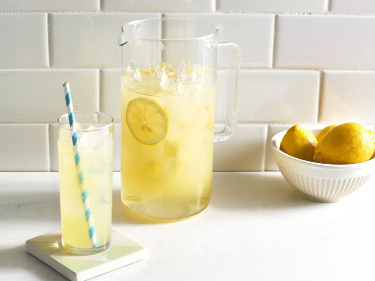

Recipe for Lemonade

Description
When life gives you lemons, make the Best Lemonade Ever! This aptly named recipe is as good as it gets: Sweet, tart, easy to throw together, and oh-so refreshing. Sweeten your day with our top-rated lemonade recipe (and get our best lemonade serving and storage tips).
Ingredients
- 1 ¾ cups white sugar
- 1 cup water
- 9 medium lemons, or more as needed
- 7 cups ice-cold water
- ice as needed
Directions
-
Gather the ingredients.
-
Combine sugar and 1 cup water in a small saucepan. Stir to dissolve sugar while mixture comes to a boil. Set aside to cool slightly.
-
Meanwhile, roll lemons around on your counter to soften. Cut in half crosswise, and squeeze into a liquid measuring cup. Add pulp to the juice, but discard any seeds. Continue juicing until you have 1 1/2 cups fresh juice and pulp.
-
Pour 7 cups ice-cold water into a pitcher. Stir in lemon juice and pulp, then add simple syrup to taste. Add ice.
-
Enjoy!
Cook's Note:
To make ahead, refrigerate the cooled simple syrup for up to one month. Continue with Step 3 when ready to serve.
Nine medium lemons should yield about 1 1/2 cups juice and pulp, but the number required will depend on the size you use.
Home